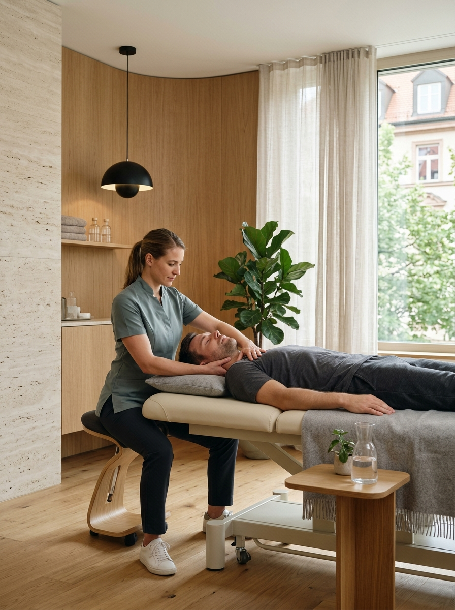
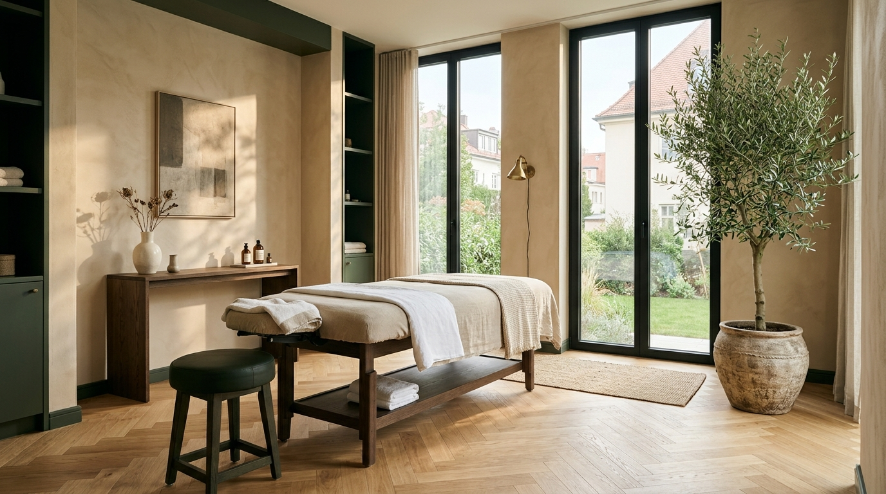
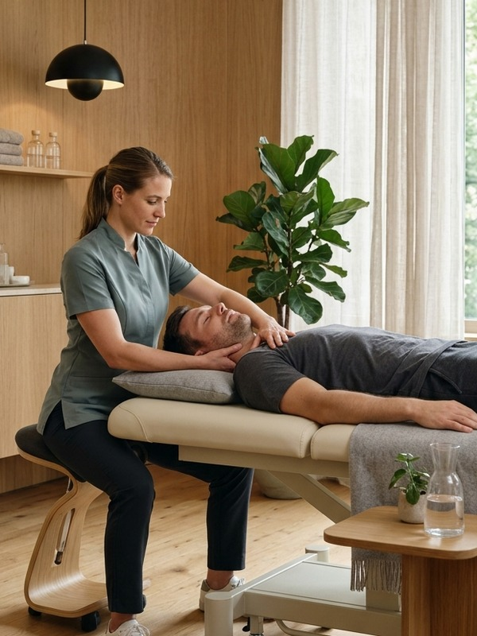
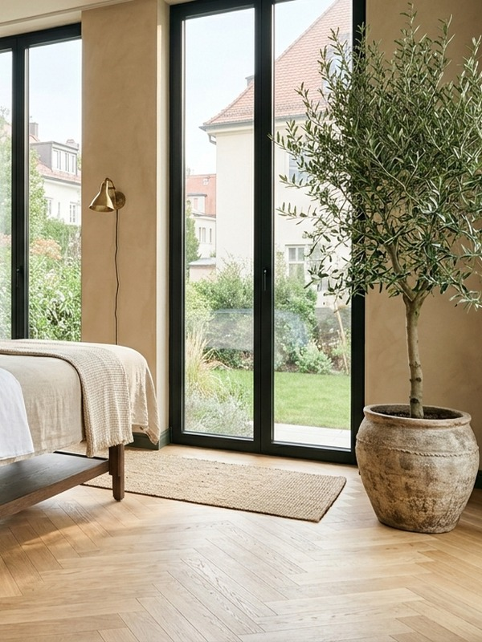
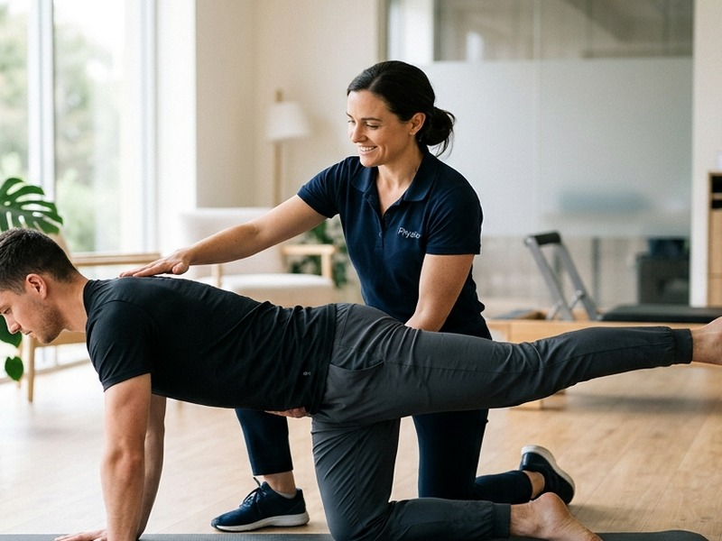

Kasse & Privat
Manuelle Therapie
Gezielte Mobilisation blockierter Gelenke und Entlastung komprimierter Nervenstrukturen.
Evidenzbasierte Manuelle Therapie, Krankengymnastik, CMD und Sportrehabilitation in der Maxvorstadt. Für alle gesetzlichen Kassen und Privatpatienten.

Beispielbild
Beispielbild
Beispielbild
BeispielbildJede Behandlung beginnt mit einem strukturierten Befund. Wählen Sie einen Bereich, um das anatomische Segment direkt im 3D Explorer zu öffnen.
Gezielte Mobilisation blockierter Gelenke und Entlastung komprimierter Nervenstrukturen.
Individuell geführte Übungstherapie für Haltung, Kraftaufbau und nachhaltige Schmerzfreiheit.
Spezialisierte Behandlung bei Kieferpressen, Knacken und zervikogenen Kopfschmerzen.
Postoperative Rehabilitation, Manuelle Lymphdrainage, Faszientherapie und medizinische Massagen.
Unter der Leitung von Farhad Faro und Enayat Ahmad betreuen wir Patientinnen und Patienten aller gesetzlichen Krankenkassen sowie Privatversicherte und Selbstzahler. Im Zentrum steht die nachhaltige Ursachenbehandlung statt schneller Standardabläufe.
Drehen Sie das 3D Modell frei oder wählen Sie einen anatomischen Schwerpunkt direkt im Raum.
Drehen Sie das 3D-Modell frei oder wählen Sie direkt einen anatomischen Schwerpunkt für passende Behandlungspfade in der Nymphenburger Str. 20a.
In der Maxvorstadt schätzen unsere Patientinnen und Patienten die ruhige Atmosphäre, klare Befundung und individuell abgestimmte Therapiepläne.
„Nachhaltige Beweglichkeit entsteht dort, wo präzise Diagnostik auf gezielte manuelle Arbeit trifft.“
Strukturierte Untersuchung von Haltung, Gelenkmechanik und Schmerzursache.
Manuelle Therapie, CMD Kieferbehandlung und tiefgehende Faszienlösung.

BeispielbildKrankengymnastik und Sportreha für dauerhafte Belastbarkeit im Alltag.
Erste unverbindliche Einordnung vor Ihrem Praxisbesuch.
Nymphenburger Str. 20a, 80335 München Maxvorstadt
Persönliche Terminabstimmung für alle gesetzlichen Kassen & Privatpatienten.